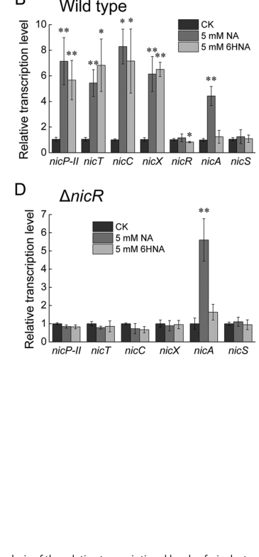

nicR encodes the HTH-type transcriptional repressor of the lower aerobic nicotinate degradation operons nicCDEFTP and nicXR. Repression is relieved by 6-hydroxynicotinate, linking NicR to substrate-responsive control of nicotinate catabolism rather than a generic stress response.
| GO Term | Evidence | Action | Reason |
|---|---|---|---|
|
GO:0003700
DNA-binding transcription factor activity
|
IEA
GO_REF:0000002 |
MODIFY |
Summary: NicR is not just a generic transcription factor; it is specifically a bacterial DNA-binding transcriptional repressor.
Reason: Replace with the more specific repressor activity term. Falcon deep research confirms direct, sequence-specific DNA binding by purified NicR with mapped operator footprints, supporting repressor activity rather than a generic transcription factor term.
Proposed replacements:
DNA-binding transcription repressor activity
Supporting Evidence:
file:PSEPK/nicR/nicR-uniprot.txt
Transcriptional repressor for the nicCDEFTP and nicXR
file:PSEPK/nicR/nicR-deep-research-falcon.md
Purified NicR binds promoter DNA upstream of **nicC** and **nicX** in vitro (EMSA), and **DNase I footprinting mapped NicR-protected sequences** on both promoters.
|
|
GO:0006355
regulation of DNA-templated transcription
|
IEA
GO_REF:0000120 |
MODIFY |
Summary: The transcription-regulation concept is correct, but the direction is specifically repression of nic operons under non-induced conditions.
Reason: Replace the broad regulation term with negative regulation of transcription. Falcon deep research confirms NicR acts as a repressor of the nicC and nicX operons, with repression relieved by the inducer 6-hydroxynicotinate, so the directional negative-regulation term is the appropriate refinement.
Proposed replacements:
negative regulation of DNA-templated transcription
Supporting Evidence:
file:PSEPK/nicR/nicR-uniprot.txt
Acts under non-induced conditions: repression of the nicCDEFTP and
file:PSEPK/nicR/nicR-deep-research-falcon.md
NicR functions as a transcriptional repressor of the nicC and nicX operons
|
|
GO:0006950
response to stress
|
IEA
GO_REF:0000118 |
REMOVE |
Summary: The reviewed evidence supports nicotinate-pathway regulation, not a general stress-response role.
Reason: Remove this broad phylogenetic (TreeGrafter) process annotation as unsupported for NicR. Falcon deep research found no stress-response role; all experimental evidence places NicR specifically as a repressor in the aerobic nicotinate catabolic pathway, and the MarR-family assignment does not by itself imply a stress function.
Supporting Evidence:
file:PSEPK/nicR/nicR-uniprot.txt
PATHWAY: Cofactor degradation; nicotinate degradation [regulation].
file:PSEPK/nicR/nicR-deep-research-falcon.md
NicR (UniProt Q88FY0; PP_3946) is an intracellular MarR-family HTH transcriptional repressor that directly binds operator-like sequences in the nicC and nicX promoter regions to repress expression of the downstream aerobic nicotinate (nicotinic acid) degradation machinery.
|
Q: Which nic promoters are directly bound by NicR in KT2440, and is 6-hydroxynicotinate the only physiologically relevant inducer that relieves repression?
Suggested experts: Bacterial transcription regulation and nicotinate pathway experts
Experiment: Perform EMSA or DNase footprinting for NicR at Pa, Pc, and Px promoter regions with nicotinate-pathway intermediates, paired with promoter reporter assays in a nicR deletion strain.
Type: DNA-binding and promoter reporter assay
The research report should be a detailed narrative explaining the function, biological processes, and localization of the gene product. Citations should be given for all claims.
You should prioritize authoritative reviews and primary scientific literature when conducting research. You can supplement
this with annotations you find in gene/protein databases, but these can be outdated or inaccurate.
We are specifically interested in the primary function of the gene - for enzymes, what reaction is catalyzed, and what is the substrate specificity? For transporters, what is the substrate? For structural proteins or adapters, what is the broader structural role? For signaling molecules, what is the role in the pathway.
We are interested in where in or outside the cell the gene product carries out its function.
We are also interested in the signaling or biochemical pathways in which the gene functions. We are less interested in broad pleiotropic effects, except where these elucidate the precise role.
Include evidence where possible. We are interested in both experimental evidence as well as inference from structure, evolution, or bioinformatic analysis. Precise studies should be prioritized over high-throughput, where available.
Target confirmed: The UniProt accession Q88FY0 corresponds to NicR, annotated as an HTH-type transcriptional repressor NicR in Pseudomonas putida strain KT2440 (ordered locus PP_3946) and located in the nicotinic acid (nicotinate; NA) catabolic gene cluster. This NicR is a MarR-family regulator and is distinct from “NicR2” described in P. putida S16 that controls a nicotine-degradation gene cluster (nic2) (and is not functionally interchangeable with KT2440 nic promoters). (wang2014anunusualrepressor pages 13-14, wang2014anunusualrepressor pages 1-2)
In P. putida KT2440, aerobic nicotinic acid (NA) degradation proceeds via the maleamate pathway, generating fumarate (a TCA-cycle intermediate). A core pathway map described for KT2440 is:
NA → 6-hydroxynicotinic acid (6HNA) → 2,5-dihydroxypyridine (2,5-DHP) → N-formylmaleamic acid (NFM) → maleamate → maleate → fumarate. (jimenez2008decipheringthegenetic pages 1-2)
MarR-family regulators are typically homodimeric winged-helix (wHTH) DNA-binding proteins that frequently act as repressors. They are commonly regulated by small-molecule ligands and environmental signals that allosterically reduce DNA binding, causing derepression. Reviews emphasize broad ligand diversity (aromatics such as salicylate/protocatechuate; metabolites such as urate; metals; oxidants) and multiple allosteric mechanisms (often involving ligand binding at dimer interfaces and/or cysteine oxidation). (nazaret2023marrfamilytranscriptional pages 1-2, nazaret2023marrfamilytranscriptional pages 2-4, capdevila2024bacterialmetallostasismetal pages 24-25)
A KT2440 genomic analysis and genetics/biochemistry study identified a dedicated nic gene cluster ordered as nicTPFEDCXRAB and showed it is required for aerobic NA utilization. Knockouts of nicA, nicB, nicC, nicD, or nicX prevented growth on NA as the sole carbon source, supporting that the cluster encodes the functional NA catabolic pathway. (jimenez2008decipheringthegenetic pages 1-2)
Within this cluster:
- NicAB: a two-component NA hydroxylase converting NA to 6HNA (jimenez2008decipheringthegenetic pages 2-3)
- NicC: 6HNA monooxygenase catalyzing oxidative decarboxylation (6HNA → 2,5-DHP) (jimenez2008decipheringthegenetic pages 3-4)
- NicX: Fe(II)-dependent dioxygenase opening the 2,5-DHP ring to NFM (jimenez2008decipheringthegenetic pages 4-5)
- NicD: N-formylmaleamate deformylase yielding formate + maleamate (jimenez2008decipheringthegenetic pages 5-6)
- NicF/NicE: last steps to fumarate via maleamate amidohydrolase and maleate isomerase (jimenez2008decipheringthegenetic pages 5-6)
- nicP/nicT encode transport-related proteins (porin/permease) associated with NA uptake. (jimenez2008decipheringthegenetic pages 1-2)
Later summaries describe functional transcriptional units such as nicAB, nicCDEFTP, and nicXR, and indicate that regulation involves at least two repressors, NicS and NicR. (das2023nicotinicacidcatabolism pages 1-2, brickman2018thebordetellabronchiseptica pages 1-2)
Experimental evidence in KT2440 shows that NicR functions as a transcriptional repressor of the nicC and nicX operons.
DNase I footprinting identified NicR-protected sequences:
- nicC promoter: GATTTAGAGCGTATACGCTA
- nicX promoter: AAGTAGGGTGTACACACTAT
These protected regions are the best available experimentally mapped DNA binding elements for KT2440 NicR in the retrieved literature. (xiao2018finrregulatesexpression pages 6-8)
Figure-based evidence for induction and mapped protection is shown in Xiao et al. (2018) Figures 4–5. (xiao2018finrregulatesexpression media 08ca10f8, xiao2018finrregulatesexpression media 05a1f1f6, xiao2018finrregulatesexpression media 2baf848d)
Multiple sources support that NA and/or 6HNA act as inducers of the nicotinate pathway; specifically, regulatory work in KT2440 indicates 6HNA is the physiological inducer for the NicR-repressed nicC/nicX operons. (xiao2018finrregulatesexpression pages 8-10)
In Xiao et al. (2018), induction experiments used 5 mM NA or 5 mM 6HNA, with results presented as mean ± SD from three independent assays and significance thresholds P < 0.05 / P < 0.01. (xiao2018finrregulatesexpression pages 6-8, xiao2018finrregulatesexpression pages 8-10)
A KT2440 study of FinR (a LysR-type regulator) demonstrated that:
- FinR positively regulates nicC and nicX operons.
- FinR deletion weakens induction of nicC/nicX in the presence of NA/6HNA and impairs growth on NA/6HNA.
- Both FinR and NicR bind the nicC and nicX promoter regions in vitro.
- NicR repression is the “chief” regulatory input for nicC/nicX, while FinR is required for full induction. (xiao2018finrregulatesexpression pages 8-10, xiao2018finrregulatesexpression pages 6-8)
Quantitative transcriptomic context from this FinR study includes 189 genes changed at |log2FC| ≥ 1 and 56 genes at |log2FC| ≥ 2, and an initial call of 26 operons altered >4-fold in the finR mutant analysis. (xiao2018finrregulatesexpression pages 2-3)
No subcellular localization experiment for NicR was identified in the retrieved texts. However, NicR’s direct binding to promoter DNA (EMSA/footprinting) and its classification as a MarR-family transcription factor support that it functions intracellularly in the cytosol/nucleoid-associated compartment to regulate transcription initiation at target promoters. (xiao2018finrregulatesexpression pages 6-8, xiao2018finrregulatesexpression pages 8-10, capdevila2024bacterialmetallostasismetal pages 24-25)
Because KT2440 NicR itself has limited new primary publications in 2023–2024 within the retrieved corpus, recent advances are best captured through (i) new mechanistic work on pathway enzymes and (ii) MarR-family regulatory/engineering advances.
A 2023 Biochemistry study performed global transient-state kinetic analysis of KT2440 NicC (6-hydroxynicotinate 3-monooxygenase), which catalyzes a decarboxylative hydroxylation converting 6HNA → 2,5-DHP. (perkins2023mechanismofthe pages 1-2)
Selected quantitative findings include:
- Two-step substrate binding with reported microscopic parameters (e.g., Kd1 = 2.3 mM, k2 = 110 s−1, k−2 = 21 s−1) and tighter net binding in the post-isomerization state (reported Kd,net values in the ~0.09–0.37 mM range across analyses). (perkins2023mechanismofthe pages 6-7)
- High coupling efficiency: 0.905 ± 0.002 mol 2,5-DHP per mol NADH; uncoupling was low at 0.096 ± 0.02 mol H2O2 per mol NADH (~10%). (perkins2023mechanismofthe pages 11-12)
- The mechanism proceeds via C4a-hydroperoxy-FAD and C4a-hydroxy-FAD intermediates; global analysis suggests steady-state turnover is partially limited by substrate hydroxylation and C4a-hydroxy-FAD dehydration. (perkins2023mechanismofthe pages 12-13)
These results deepen the mechanistic understanding of a key step that is transcriptionally controlled upstream by NicR-regulated operons.
A 2023 review of MarR regulators in plant-interacting bacteria and a 2024 Chemical Reviews metallostasis synthesis highlight:
- Ligand-binding diversity and variable stoichiometries (e.g., examples of multiple salicylate molecules per dimer, up to eight per dimer in one cited system), emphasizing the complexity of MarR allostery. (nazaret2023marrfamilytranscriptional pages 2-4)
- Structural versatility: triangular homodimer scaffold, winged-helix DNA binding, and multiple mechanisms for allosteric inhibition/derepression including cysteine oxidation. (capdevila2024bacterialmetallostasismetal pages 24-25)
Although not NicR-specific, these authoritative sources contextualize NicR as a canonical MarR-like repressor likely subject to ligand-mediated derepression by nicotinate pathway intermediates (e.g., 6HNA).
A 2024 Nucleic Acids Research paper on the MarR-superfamily UrtR regulators (urate-responsive) synthesizes multiple structural paradigms for effector-mediated DNA dissociation across MarR-like proteins and highlights that effector mechanisms can differ substantially from “global shift” models. (song2024structuralbasisof pages 14-14)
Snowprint (Communications Biology, 2024) provides a computational pipeline for predicting regulator–operator pairs from a single protein identifier and demonstrated high functional success rates:
- Correct/near-correct operator predictions for 67 of 147 experimentally validated pairs (>45%) across multiple regulator families, including MarR. (d’oelsnitz2024snowprintapredictive pages 1-2)
- In E. coli, among 33 tested circuits, 28/33 reduced reporter expression by ≥50%, and 24/33 produced >20-fold dynamic range (top 24 had average dynamic range ~64-fold). (d’oelsnitz2024snowprintapredictive pages 4-5)
- Ligand screens yielded new sensors with induction ratios up to 10.7-fold and specific examples of responsive ligands (olivetolic acid, geraniol, ursodiol, tetrahydropapaverine). (d’oelsnitz2024snowprintapredictive pages 5-7)
This is directly relevant to NicR-like regulators as parts of programmable catabolic control modules and biosensors.
A 2023 critical review describes nicotinate dehydrogenase / nicotinic acid hydroxylase (NDHase; EC 1.17.1.5) as an industrially relevant catalyst for regioselective hydroxylation of nicotinic acid and other pyridines, generating intermediates (e.g., 6HNA, 3-cyano-6-hydroxypyridine) used in neonicotinoid pesticide manufacturing. (chen2023sourcescomponentsstructure pages 2-3, chen2023sourcescomponentsstructure pages 6-7)
Reported implementation examples include:
- A cited “double catalytic coupling” process producing 50.38 g/L 6-hydroxynicotinic acid and 5.77 g/L 3-cyano-6-hydroxypyridine under described coupled conditions. (chen2023sourcescomponentsstructure pages 6-7)
- Mention of industrial commercialization of a biocatalytic route (Mitsubishi) for pyridine derivative production. (chen2023sourcescomponentsstructure pages 7-8, chen2023sourcescomponentsstructure pages 6-7)
While NDHase is distinct from NicR, NicR-controlled nicotinate catabolism shares intermediates (NA/6HNA) and highlights why tight transcriptional control is beneficial (balancing catabolic flux with NAD precursor homeostasis). (das2023nicotinicacidcatabolism pages 1-2)
The NDHase review emphasizes applications in wastewater treatment, where NDHase-producing strains can enhance removal of N-heterocyclic contaminants; it cites an example of 650 mg/L 6-methylquinoline degraded within 24 h at 28°C by a Pseudomonas putida strain (QP2). (chen2023sourcescomponentsstructure pages 7-8)
MarR-family regulators are increasingly mined/repurposed as ligand-inducible switches for engineered metabolism. Snowprint provides an example of scaling this discovery and domestication process, enabling faster translation of catabolic regulators (conceptually including NicR-like repressors) into biosensors and dynamic control systems. (d’oelsnitz2024snowprintapredictive pages 4-5, d’oelsnitz2024snowprintapredictive pages 5-7)
NicR (UniProt Q88FY0; PP_3946) is an intracellular MarR-family HTH transcriptional repressor that directly binds operator-like sequences in the nicC and nicX promoter regions to repress expression of the downstream aerobic nicotinate (nicotinic acid) degradation machinery. Pathway intermediates (notably 6-hydroxynicotinic acid) act as inducers that relieve repression, enabling NA catabolism to fumarate. (xiao2018finrregulatesexpression pages 6-8, xiao2018finrregulatesexpression pages 8-10, jimenez2008decipheringthegenetic pages 1-2)
| Category | Finding | Evidence / quantitative details | Key source(s) |
|---|---|---|---|
| Target identity | NicR in Pseudomonas putida KT2440 corresponds to UniProt Q88FY0, gene nicR, locus PP_3946; it is the nicotinate-pathway regulator and should not be confused with nicotine-pathway NicR2 from P. putida S16. | KT2440 papers and comparative studies distinguish KT2440 NicR from S16 NicR2 and place NicR in the nicotinate-degradation locus. (wang2014anunusualrepressor pages 13-14, brickman2018thebordetellabronchiseptica pages 3-3) | Jiménez et al., 2008, https://doi.org/10.1073/pnas.0802273105; Wang et al., 2014, https://doi.org/10.1111/mmi.12533; Brickman & Armstrong, 2018, https://doi.org/10.1111/mmi.13943 |
| Protein family / domains | MarR-family transcription factor with HTH / winged-helix DNA-binding architecture, consistent with the supplied UniProt/interpro context. | MarR-family assignment is explicitly reported for KT2440 NicR and aligns with homologous nic-pathway repressors. (wang2014anunusualrepressor pages 13-14, brickman2018thebordetellabronchiseptica pages 3-3) | Wang et al., 2014, https://doi.org/10.1111/mmi.12533; Jiménez et al., 2008, https://doi.org/10.1073/pnas.0802273105 |
| Primary function | DNA-binding transcriptional repressor of the nicC and nicX operons in aerobic nicotinic acid (NA) degradation. | Supported by promoter binding, footprinting, and induction/derepression experiments. (xiao2018finrregulatesexpression pages 6-8, xiao2018finrregulatesexpression pages 8-10, xiao2018finrregulatesexpression pages 1-2, das2023nicotinicacidcatabolism pages 1-2) | Xiao et al., 2018, https://doi.org/10.1128/AEM.01210-18; Das et al., 2023, https://doi.org/10.1128/spectrum.04457-22 |
| Pathway role | NicR acts in the aerobic nicotinate catabolic pathway: NA → 6HNA → 2,5-DHP → N-formylmaleamate → maleamate → maleate → fumarate. | The KT2440 nic cluster was experimentally defined as the pathway for aerobic NA degradation; structural-gene knockouts abolished growth on NA. (jimenez2008decipheringthegenetic pages 1-2) | Jiménez et al., 2008, https://doi.org/10.1073/pnas.0802273105 |
| Cluster / operon context | Canonical cluster reported as nicTPFEDCXRAB; later regulatory work describes functional organization as nicAB, nicCDEFTP, and nicXR. NicR represses nicC/nicX; NicS represses nicAB. | Cluster order and gene content were defined in the PNAS study; later summaries describe the three-operon organization and regulator split. (jimenez2008decipheringthegenetic pages 1-2, das2023nicotinicacidcatabolism pages 1-2, brickman2018thebordetellabronchiseptica pages 1-2, xiao2018finrregulatesexpression pages 1-2) | Jiménez et al., 2008, https://doi.org/10.1073/pnas.0802273105; Brickman & Armstrong, 2018, https://doi.org/10.1111/mmi.13943; Das et al., 2023, https://doi.org/10.1128/spectrum.04457-22 |
| Effectors / inducers | NA and 6HNA induce nic-pathway expression; 6HNA is reported as the physiological inducer for NicR-controlled nicC/nicX regulation. | In KT2440, induction assays used 5 mM NA or 5 mM 6HNA. nicA responds to NA but not 6HNA, consistent with separate NicS control. (xiao2018finrregulatesexpression pages 6-8, xiao2018finrregulatesexpression pages 8-10, wang2014anunusualrepressor pages 13-14, brickman2018thebordetellabronchiseptica pages 1-2) | Xiao et al., 2018, https://doi.org/10.1128/AEM.01210-18; Wang et al., 2014, https://doi.org/10.1111/mmi.12533; Brickman & Armstrong, 2018, https://doi.org/10.1111/mmi.13943 |
| DNA binding sites | nicC promoter protected sequence: GATTTAGAGCGTATACGCTA; nicX promoter protected sequence: AAGTAGGGTGTACACACTAT. | Identified by DNase I footprinting; direct binding to both promoters was also shown by EMSA. (xiao2018finrregulatesexpression pages 6-8, xiao2018finrregulatesexpression pages 8-10) | Xiao et al., 2018, https://doi.org/10.1128/AEM.01210-18 |
| Regulatory mechanism | NicR provides the major repressive input on nicC/nicX; FinR provides a positive input required for full induction. Both proteins bind the two promoters. | In wild type and ΔfinR, nicC/nicX were induced by NA/6HNA; induction was not observed in ΔnicR or ΔfinRΔnicR under the reported conditions. ΔfinR weakened induction, and ΔfinRΔnicR expression was higher than WT but lower than ΔnicR. (xiao2018finrregulatesexpression pages 6-8, xiao2018finrregulatesexpression pages 8-10) | Xiao et al., 2018, https://doi.org/10.1128/AEM.01210-18 |
| Cellular localization / site of action | Intracellular, cytosolic/nucleoid-associated transcription regulator acting at promoter DNA; no evidence supports membrane or extracellular localization. | In vitro promoter binding and MarR-family regulator architecture support an intracellular DNA-binding role. (xiao2018finrregulatesexpression pages 6-8, brickman2018thebordetellabronchiseptica pages 3-3) | Xiao et al., 2018, https://doi.org/10.1128/AEM.01210-18; Jiménez et al., 2008, https://doi.org/10.1073/pnas.0802273105 |
| Key evidence types | Functional annotation is supported by gene deletion, RT-qPCR, growth assays on NA/6HNA, EMSA, and DNase I footprinting. | ΔfinR impaired growth on NA/6HNA and reduced nicC/nicX expression; NicR and FinR both shifted promoter DNA in EMSA; NicR footprints were mapped at both promoters. (xiao2018finrregulatesexpression pages 6-8, xiao2018finrregulatesexpression pages 1-2, xiao2018finrregulatesexpression pages 8-10) | Xiao et al., 2018, https://doi.org/10.1128/AEM.01210-18 |
| Quantitative / statistical details | In the finR RNA-seq study, 189 genes changed at |log2FC| ≥ 1, 56 genes at |log2FC| ≥ 2, and 26 operons were initially called as >4-fold changed. Figure 4 induction assays used 5 mM NA/6HNA, n = 3 independent assays, with * P < 0.05 and ** P < 0.01. | These are the clearest quantitative data available from the KT2440 NicR/FinR regulatory study. (xiao2018finrregulatesexpression pages 2-3, xiao2018finrregulatesexpression pages 6-8, xiao2018finrregulatesexpression pages 8-10) | Xiao et al., 2018, https://doi.org/10.1128/AEM.01210-18 |
| Disambiguation note | KT2440 NicR is the nicotinate-pathway MarR-family regulator; NicR2 from P. putida S16 is a different nicotine-pathway regulator with different promoter specificity and regulatory behavior. | Cross-pathway comparisons explicitly state that KT2440 NicR and S16 NicR2 are distinct and not cross-functional. (wang2014anunusualrepressor pages 13-14, wang2014anunusualrepressor pages 1-2) | Wang et al., 2014, https://doi.org/10.1111/mmi.12533 |
Table: This table summarizes the experimentally supported functional annotation of NicR (Q88FY0/PP_3946) in Pseudomonas putida KT2440, including identity, pathway role, effectors, DNA-binding sites, and evidence. It is useful as a compact reference linking the main biological claims to the primary literature and quantitative details.
References
(wang2014anunusualrepressor pages 13-14): Lijuan Wang, Hongzhi Tang, Hao Yu, Yuxiang Yao, and Ping Xu. An unusual repressor controls the expression of a crucial nicotine‐degrading gene cluster in pseudomonas putida s16. Molecular Microbiology, 91:1252-1269, Mar 2014. URL: https://doi.org/10.1111/mmi.12533, doi:10.1111/mmi.12533. This article has 37 citations and is from a domain leading peer-reviewed journal.
(wang2014anunusualrepressor pages 1-2): Lijuan Wang, Hongzhi Tang, Hao Yu, Yuxiang Yao, and Ping Xu. An unusual repressor controls the expression of a crucial nicotine‐degrading gene cluster in pseudomonas putida s16. Molecular Microbiology, 91:1252-1269, Mar 2014. URL: https://doi.org/10.1111/mmi.12533, doi:10.1111/mmi.12533. This article has 37 citations and is from a domain leading peer-reviewed journal.
(jimenez2008decipheringthegenetic pages 1-2): José I. Jiménez, Ángeles Canales, Jesús Jiménez-Barbero, Krzysztof Ginalski, Leszek Rychlewski, José L. García, and Eduardo Díaz. Deciphering the genetic determinants for aerobic nicotinic acid degradation: the nic cluster from pseudomonas putida kt2440. Proceedings of the National Academy of Sciences, 105:11329-11334, Aug 2008. URL: https://doi.org/10.1073/pnas.0802273105, doi:10.1073/pnas.0802273105. This article has 173 citations and is from a highest quality peer-reviewed journal.
(nazaret2023marrfamilytranscriptional pages 1-2): Fanny Nazaret, Geneviève Alloing, Karine Mandon, and Pierre Frendo. Marr family transcriptional regulators and their roles in plant-interacting bacteria. Microorganisms, 11:1936, Jul 2023. URL: https://doi.org/10.3390/microorganisms11081936, doi:10.3390/microorganisms11081936. This article has 14 citations.
(nazaret2023marrfamilytranscriptional pages 2-4): Fanny Nazaret, Geneviève Alloing, Karine Mandon, and Pierre Frendo. Marr family transcriptional regulators and their roles in plant-interacting bacteria. Microorganisms, 11:1936, Jul 2023. URL: https://doi.org/10.3390/microorganisms11081936, doi:10.3390/microorganisms11081936. This article has 14 citations.
(capdevila2024bacterialmetallostasismetal pages 24-25): Daiana A. Capdevila, Johnma J. Rondón, Katherine A. Edmonds, Joseph S. Rocchio, Matias Villarruel Dujovne, and David P. Giedroc. Bacterial metallostasis: metal sensing, metalloproteome remodeling, and metal trafficking. Chemical Reviews, 124:13574-13659, Dec 2024. URL: https://doi.org/10.1021/acs.chemrev.4c00264, doi:10.1021/acs.chemrev.4c00264. This article has 44 citations and is from a highest quality peer-reviewed journal.
(jimenez2008decipheringthegenetic pages 2-3): José I. Jiménez, Ángeles Canales, Jesús Jiménez-Barbero, Krzysztof Ginalski, Leszek Rychlewski, José L. García, and Eduardo Díaz. Deciphering the genetic determinants for aerobic nicotinic acid degradation: the nic cluster from pseudomonas putida kt2440. Proceedings of the National Academy of Sciences, 105:11329-11334, Aug 2008. URL: https://doi.org/10.1073/pnas.0802273105, doi:10.1073/pnas.0802273105. This article has 173 citations and is from a highest quality peer-reviewed journal.
(jimenez2008decipheringthegenetic pages 3-4): José I. Jiménez, Ángeles Canales, Jesús Jiménez-Barbero, Krzysztof Ginalski, Leszek Rychlewski, José L. García, and Eduardo Díaz. Deciphering the genetic determinants for aerobic nicotinic acid degradation: the nic cluster from pseudomonas putida kt2440. Proceedings of the National Academy of Sciences, 105:11329-11334, Aug 2008. URL: https://doi.org/10.1073/pnas.0802273105, doi:10.1073/pnas.0802273105. This article has 173 citations and is from a highest quality peer-reviewed journal.
(jimenez2008decipheringthegenetic pages 4-5): José I. Jiménez, Ángeles Canales, Jesús Jiménez-Barbero, Krzysztof Ginalski, Leszek Rychlewski, José L. García, and Eduardo Díaz. Deciphering the genetic determinants for aerobic nicotinic acid degradation: the nic cluster from pseudomonas putida kt2440. Proceedings of the National Academy of Sciences, 105:11329-11334, Aug 2008. URL: https://doi.org/10.1073/pnas.0802273105, doi:10.1073/pnas.0802273105. This article has 173 citations and is from a highest quality peer-reviewed journal.
(jimenez2008decipheringthegenetic pages 5-6): José I. Jiménez, Ángeles Canales, Jesús Jiménez-Barbero, Krzysztof Ginalski, Leszek Rychlewski, José L. García, and Eduardo Díaz. Deciphering the genetic determinants for aerobic nicotinic acid degradation: the nic cluster from pseudomonas putida kt2440. Proceedings of the National Academy of Sciences, 105:11329-11334, Aug 2008. URL: https://doi.org/10.1073/pnas.0802273105, doi:10.1073/pnas.0802273105. This article has 173 citations and is from a highest quality peer-reviewed journal.
(das2023nicotinicacidcatabolism pages 1-2): Joyati Das, Rahul Kumar, Sunil Kumar Yadav, and Gopaljee Jha. Nicotinic acid catabolism modulates bacterial mycophagy in burkholderia gladioli strain ngj1. Microbiology Spectrum, Jun 2023. URL: https://doi.org/10.1128/spectrum.04457-22, doi:10.1128/spectrum.04457-22. This article has 6 citations and is from a domain leading peer-reviewed journal.
(brickman2018thebordetellabronchiseptica pages 1-2): Timothy J. Brickman and Sandra K. Armstrong. The bordetella bronchiseptica nic locus encodes a nicotinic acid degradation pathway and the 6‐hydroxynicotinate‐responsive regulator bpsr. Molecular Microbiology, 108:397-409, May 2018. URL: https://doi.org/10.1111/mmi.13943, doi:10.1111/mmi.13943. This article has 13 citations and is from a domain leading peer-reviewed journal.
(xiao2018finrregulatesexpression pages 6-8): Yujie Xiao, Wenjing Zhu, Huizhong Liu, Hailing Nie, Wenli Chen, and Qiaoyun Huang. Finr regulates expression of nicc and nicx operons, involved in nicotinic acid degradation in pseudomonas putida kt2440. Applied and Environmental Microbiology, Oct 2018. URL: https://doi.org/10.1128/aem.01210-18, doi:10.1128/aem.01210-18. This article has 10 citations and is from a peer-reviewed journal.
(xiao2018finrregulatesexpression media 08ca10f8): Yujie Xiao, Wenjing Zhu, Huizhong Liu, Hailing Nie, Wenli Chen, and Qiaoyun Huang. Finr regulates expression of nicc and nicx operons, involved in nicotinic acid degradation in pseudomonas putida kt2440. Applied and Environmental Microbiology, Oct 2018. URL: https://doi.org/10.1128/aem.01210-18, doi:10.1128/aem.01210-18. This article has 10 citations and is from a peer-reviewed journal.
(xiao2018finrregulatesexpression media 05a1f1f6): Yujie Xiao, Wenjing Zhu, Huizhong Liu, Hailing Nie, Wenli Chen, and Qiaoyun Huang. Finr regulates expression of nicc and nicx operons, involved in nicotinic acid degradation in pseudomonas putida kt2440. Applied and Environmental Microbiology, Oct 2018. URL: https://doi.org/10.1128/aem.01210-18, doi:10.1128/aem.01210-18. This article has 10 citations and is from a peer-reviewed journal.
(xiao2018finrregulatesexpression media 2baf848d): Yujie Xiao, Wenjing Zhu, Huizhong Liu, Hailing Nie, Wenli Chen, and Qiaoyun Huang. Finr regulates expression of nicc and nicx operons, involved in nicotinic acid degradation in pseudomonas putida kt2440. Applied and Environmental Microbiology, Oct 2018. URL: https://doi.org/10.1128/aem.01210-18, doi:10.1128/aem.01210-18. This article has 10 citations and is from a peer-reviewed journal.
(xiao2018finrregulatesexpression pages 8-10): Yujie Xiao, Wenjing Zhu, Huizhong Liu, Hailing Nie, Wenli Chen, and Qiaoyun Huang. Finr regulates expression of nicc and nicx operons, involved in nicotinic acid degradation in pseudomonas putida kt2440. Applied and Environmental Microbiology, Oct 2018. URL: https://doi.org/10.1128/aem.01210-18, doi:10.1128/aem.01210-18. This article has 10 citations and is from a peer-reviewed journal.
(xiao2018finrregulatesexpression pages 2-3): Yujie Xiao, Wenjing Zhu, Huizhong Liu, Hailing Nie, Wenli Chen, and Qiaoyun Huang. Finr regulates expression of nicc and nicx operons, involved in nicotinic acid degradation in pseudomonas putida kt2440. Applied and Environmental Microbiology, Oct 2018. URL: https://doi.org/10.1128/aem.01210-18, doi:10.1128/aem.01210-18. This article has 10 citations and is from a peer-reviewed journal.
(perkins2023mechanismofthe pages 1-2): Scott W. Perkins, May Z. Hlaing, Katherine A. Hicks, Lauren J. Rajakovich, and Mark J. Snider. Mechanism of the multistep catalytic cycle of 6-hydroxynicotinate 3-monooxygenase revealed by global kinetic analysis. Biochemistry, 62:1553-1567, May 2023. URL: https://doi.org/10.1021/acs.biochem.2c00514, doi:10.1021/acs.biochem.2c00514. This article has 4 citations and is from a peer-reviewed journal.
(perkins2023mechanismofthe pages 6-7): Scott W. Perkins, May Z. Hlaing, Katherine A. Hicks, Lauren J. Rajakovich, and Mark J. Snider. Mechanism of the multistep catalytic cycle of 6-hydroxynicotinate 3-monooxygenase revealed by global kinetic analysis. Biochemistry, 62:1553-1567, May 2023. URL: https://doi.org/10.1021/acs.biochem.2c00514, doi:10.1021/acs.biochem.2c00514. This article has 4 citations and is from a peer-reviewed journal.
(perkins2023mechanismofthe pages 11-12): Scott W. Perkins, May Z. Hlaing, Katherine A. Hicks, Lauren J. Rajakovich, and Mark J. Snider. Mechanism of the multistep catalytic cycle of 6-hydroxynicotinate 3-monooxygenase revealed by global kinetic analysis. Biochemistry, 62:1553-1567, May 2023. URL: https://doi.org/10.1021/acs.biochem.2c00514, doi:10.1021/acs.biochem.2c00514. This article has 4 citations and is from a peer-reviewed journal.
(perkins2023mechanismofthe pages 12-13): Scott W. Perkins, May Z. Hlaing, Katherine A. Hicks, Lauren J. Rajakovich, and Mark J. Snider. Mechanism of the multistep catalytic cycle of 6-hydroxynicotinate 3-monooxygenase revealed by global kinetic analysis. Biochemistry, 62:1553-1567, May 2023. URL: https://doi.org/10.1021/acs.biochem.2c00514, doi:10.1021/acs.biochem.2c00514. This article has 4 citations and is from a peer-reviewed journal.
(song2024structuralbasisof pages 14-14): Wan Seok Song, Dong Uk Ki, Hye Yeon Cho, Oh Hyun Kwon, Hongbaek Cho, and Sung-il Yoon. Structural basis of transcriptional regulation by urtr in response to uric acid. Nucleic Acids Research, 52:13192-13205, Nov 2024. URL: https://doi.org/10.1093/nar/gkae922, doi:10.1093/nar/gkae922. This article has 12 citations and is from a highest quality peer-reviewed journal.
(d’oelsnitz2024snowprintapredictive pages 1-2): Simon d’Oelsnitz, Sarah K. Stofel, Joshua D. Love, and Andrew D. Ellington. Snowprint: a predictive tool for genetic biosensor discovery. Communications Biology, Feb 2024. URL: https://doi.org/10.1038/s42003-024-05849-8, doi:10.1038/s42003-024-05849-8. This article has 21 citations and is from a peer-reviewed journal.
(d’oelsnitz2024snowprintapredictive pages 4-5): Simon d’Oelsnitz, Sarah K. Stofel, Joshua D. Love, and Andrew D. Ellington. Snowprint: a predictive tool for genetic biosensor discovery. Communications Biology, Feb 2024. URL: https://doi.org/10.1038/s42003-024-05849-8, doi:10.1038/s42003-024-05849-8. This article has 21 citations and is from a peer-reviewed journal.
(d’oelsnitz2024snowprintapredictive pages 5-7): Simon d’Oelsnitz, Sarah K. Stofel, Joshua D. Love, and Andrew D. Ellington. Snowprint: a predictive tool for genetic biosensor discovery. Communications Biology, Feb 2024. URL: https://doi.org/10.1038/s42003-024-05849-8, doi:10.1038/s42003-024-05849-8. This article has 21 citations and is from a peer-reviewed journal.
(chen2023sourcescomponentsstructure pages 2-3): Zhi Chen, Xiangjing Xu, Xin Ju, Lishi Yan, Liangzhi Li, and Lin Yang. Sources, components, structure, catalytic mechanism and applications: a critical review on nicotinate dehydrogenase. Journal of Microbiology and Biotechnology, 33:707-714, Mar 2023. URL: https://doi.org/10.4014/jmb.2302.02011, doi:10.4014/jmb.2302.02011. This article has 1 citations and is from a peer-reviewed journal.
(chen2023sourcescomponentsstructure pages 6-7): Zhi Chen, Xiangjing Xu, Xin Ju, Lishi Yan, Liangzhi Li, and Lin Yang. Sources, components, structure, catalytic mechanism and applications: a critical review on nicotinate dehydrogenase. Journal of Microbiology and Biotechnology, 33:707-714, Mar 2023. URL: https://doi.org/10.4014/jmb.2302.02011, doi:10.4014/jmb.2302.02011. This article has 1 citations and is from a peer-reviewed journal.
(chen2023sourcescomponentsstructure pages 7-8): Zhi Chen, Xiangjing Xu, Xin Ju, Lishi Yan, Liangzhi Li, and Lin Yang. Sources, components, structure, catalytic mechanism and applications: a critical review on nicotinate dehydrogenase. Journal of Microbiology and Biotechnology, 33:707-714, Mar 2023. URL: https://doi.org/10.4014/jmb.2302.02011, doi:10.4014/jmb.2302.02011. This article has 1 citations and is from a peer-reviewed journal.
(brickman2018thebordetellabronchiseptica pages 3-3): Timothy J. Brickman and Sandra K. Armstrong. The bordetella bronchiseptica nic locus encodes a nicotinic acid degradation pathway and the 6‐hydroxynicotinate‐responsive regulator bpsr. Molecular Microbiology, 108:397-409, May 2018. URL: https://doi.org/10.1111/mmi.13943, doi:10.1111/mmi.13943. This article has 13 citations and is from a domain leading peer-reviewed journal.
(xiao2018finrregulatesexpression pages 1-2): Yujie Xiao, Wenjing Zhu, Huizhong Liu, Hailing Nie, Wenli Chen, and Qiaoyun Huang. Finr regulates expression of nicc and nicx operons, involved in nicotinic acid degradation in pseudomonas putida kt2440. Applied and Environmental Microbiology, Oct 2018. URL: https://doi.org/10.1128/aem.01210-18, doi:10.1128/aem.01210-18. This article has 10 citations and is from a peer-reviewed journal.

id: Q88FY0
gene_symbol: nicR
product_type: PROTEIN
status: DRAFT
taxon:
id: NCBITaxon:160488
label: Pseudomonas putida (strain ATCC 47054 / DSM 6125 / CFBP 8728 / NCIMB 11950 / KT2440)
description: nicR encodes the HTH-type transcriptional repressor of the lower aerobic nicotinate
degradation operons nicCDEFTP and nicXR. Repression is relieved by 6-hydroxynicotinate,
linking NicR to substrate-responsive control of nicotinate catabolism rather than a generic
stress response.
existing_annotations:
- term:
id: GO:0003700
label: DNA-binding transcription factor activity
evidence_type: IEA
original_reference_id: GO_REF:0000002
review:
summary: NicR is not just a generic transcription factor; it is specifically a bacterial
DNA-binding transcriptional repressor.
action: MODIFY
reason: Replace with the more specific repressor activity term. Falcon deep research
confirms direct, sequence-specific DNA binding by purified NicR with mapped
operator footprints, supporting repressor activity rather than a generic
transcription factor term.
supported_by:
- reference_id: file:PSEPK/nicR/nicR-uniprot.txt
supporting_text: Transcriptional repressor for the nicCDEFTP and nicXR
- reference_id: file:PSEPK/nicR/nicR-deep-research-falcon.md
supporting_text: Purified NicR binds promoter DNA upstream of **nicC** and **nicX**
in vitro (EMSA), and **DNase I footprinting mapped NicR-protected sequences**
on both promoters.
proposed_replacement_terms:
- id: GO:0001217
label: DNA-binding transcription repressor activity
- term:
id: GO:0006355
label: regulation of DNA-templated transcription
evidence_type: IEA
original_reference_id: GO_REF:0000120
review:
summary: The transcription-regulation concept is correct, but the direction is specifically
repression of nic operons under non-induced conditions.
action: MODIFY
reason: Replace the broad regulation term with negative regulation of transcription.
Falcon deep research confirms NicR acts as a repressor of the nicC and nicX
operons, with repression relieved by the inducer 6-hydroxynicotinate, so the
directional negative-regulation term is the appropriate refinement.
supported_by:
- reference_id: file:PSEPK/nicR/nicR-uniprot.txt
supporting_text: 'Acts under non-induced conditions: repression of the nicCDEFTP and'
- reference_id: file:PSEPK/nicR/nicR-deep-research-falcon.md
supporting_text: NicR functions as a transcriptional repressor of the nicC and
nicX operons
proposed_replacement_terms:
- id: GO:0045892
label: negative regulation of DNA-templated transcription
- term:
id: GO:0006950
label: response to stress
evidence_type: IEA
original_reference_id: GO_REF:0000118
review:
summary: The reviewed evidence supports nicotinate-pathway regulation, not a general stress-response
role.
action: REMOVE
reason: Remove this broad phylogenetic (TreeGrafter) process annotation as unsupported
for NicR. Falcon deep research found no stress-response role; all experimental
evidence places NicR specifically as a repressor in the aerobic nicotinate
catabolic pathway, and the MarR-family assignment does not by itself imply a
stress function.
supported_by:
- reference_id: file:PSEPK/nicR/nicR-uniprot.txt
supporting_text: 'PATHWAY: Cofactor degradation; nicotinate degradation [regulation].'
- reference_id: file:PSEPK/nicR/nicR-deep-research-falcon.md
supporting_text: NicR (UniProt Q88FY0; PP_3946) is an intracellular MarR-family
HTH transcriptional repressor that directly binds operator-like sequences in
the nicC and nicX promoter regions to repress expression of the downstream
aerobic nicotinate (nicotinic acid) degradation machinery.
references:
- id: GO_REF:0000002
title: Gene Ontology annotation through association of InterPro records with GO terms.
findings:
- statement: InterPro2GO supplies domain/family-based automated annotations that require
review against the gene-specific UniProt and literature context.
- id: file:PSEPK/nicR/nicR-uniprot.txt
title: UniProtKB reviewed entry for nicR
findings:
- statement: UniProt identifies NicR as the transcriptional repressor for nicCDEFTP and
nicXR and places it in regulation of nicotinate degradation.
- id: file:PSEPK/nicR/nicR-deep-research-falcon.md
title: Falcon deep research report for nicR (Q88FY0)
findings:
- statement: Purified NicR directly binds the nicC and nicX promoters in vitro and
its protected operator sequences were mapped by DNase I footprinting, providing
direct evidence for sequence-specific repressor DNA binding.
supporting_text: Purified NicR binds promoter DNA upstream of **nicC** and **nicX**
in vitro (EMSA), and **DNase I footprinting mapped NicR-protected sequences**
on both promoters.
reference_section_type: OTHER
- statement: NicR functions as a transcriptional repressor of the nicC and nicX
operons in the aerobic nicotinic acid degradation pathway of P. putida KT2440.
supporting_text: NicR functions as a transcriptional repressor of the nicC and
nicX operons
reference_section_type: OTHER
- statement: 6-hydroxynicotinate (6HNA) is the physiological inducer that relieves
NicR-mediated repression of the nicC/nicX operons.
supporting_text: specifically, regulatory work in KT2440 indicates **6HNA is the
physiological inducer** for the NicR-repressed **nicC/nicX** operons.
reference_section_type: OTHER
- statement: NicR is an intracellular MarR-family HTH repressor that binds operator-like
sequences in the nicC and nicX promoters to repress aerobic nicotinate
degradation, with 6HNA relieving repression.
supporting_text: NicR (UniProt Q88FY0; PP_3946) is an intracellular MarR-family
HTH transcriptional repressor that directly binds operator-like sequences in
the nicC and nicX promoter regions to repress expression of the downstream
aerobic nicotinate (nicotinic acid) degradation machinery.
reference_section_type: OTHER
- statement: NicR provides the major repressive input on nicC/nicX while FinR provides
a positive input required for full induction; both bind the two promoters.
supporting_text: NicR provides the major **repressive** input on **nicC/nicX**;
**FinR** provides a positive input required for full induction.
reference_section_type: OTHER
- statement: No subcellular localization experiment exists for NicR, but its direct
promoter DNA binding and MarR-family architecture support an intracellular,
cytosol/nucleoid-associated site of action at target promoters.
supporting_text: support that it functions **intracellularly** in the **cytosol/nucleoid-associated
compartment** to regulate transcription initiation at target promoters.
reference_section_type: OTHER
- id: GO_REF:0000120
title: Combined automated GO annotation using multiple IEA methods.
findings:
- statement: Combined automated methods provide provisional GO annotations that require
gene-level review.
- id: GO_REF:0000118
title: TreeGrafter-generated Gene Ontology annotations based on phylogenetic placement.
findings:
- statement: TreeGrafter supplies phylogenetic annotations that can over-transfer generic
location or process terms.
- id: PMID:18678916
title: 'Deciphering the genetic determinants for aerobic nicotinic acid degradation: the
nic cluster from Pseudomonas putida KT2440.'
findings:
- statement: The nic cluster paper establishes the nic pathway context.
- id: PMID:21450002
title: A finely tuned regulatory circuit of the nicotinic acid degradation pathway in Pseudomonas
putida.
findings:
- statement: NicR regulation is alleviated by 6-hydroxynicotinate and affects nic operon
expression.
core_functions:
- description: NicR represses nicCDEFTP and nicXR transcription in the aerobic nicotinate
degradation pathway, with repression relieved by the pathway intermediate 6-hydroxynicotinate.
molecular_function:
id: GO:0001217
label: DNA-binding transcription repressor activity
directly_involved_in:
- id: GO:0045892
label: negative regulation of DNA-templated transcription
supported_by:
- reference_id: file:PSEPK/nicR/nicR-uniprot.txt
supporting_text: Transcriptional repressor for the nicCDEFTP and nicXR
- reference_id: file:PSEPK/nicR/nicR-uniprot.txt
supporting_text: repression of the nicCDEFTP and
- reference_id: file:PSEPK/nicR/nicR-uniprot.txt
supporting_text: In presence of 6HNA, repression is alleviated.
- reference_id: file:PSEPK/nicR/nicR-deep-research-falcon.md
supporting_text: NicR (UniProt Q88FY0; PP_3946) is an intracellular MarR-family
HTH transcriptional repressor that directly binds operator-like sequences in
the nicC and nicX promoter regions to repress expression of the downstream
aerobic nicotinate (nicotinic acid) degradation machinery.
- reference_id: file:PSEPK/nicR/nicR-deep-research-falcon.md
supporting_text: Pathway intermediates (notably 6-hydroxynicotinic acid) act as
inducers that relieve repression, enabling NA catabolism to fumarate.
proposed_new_terms: []
suggested_questions:
- question: Which nic promoters are directly bound by NicR in KT2440, and is 6-hydroxynicotinate
the only physiologically relevant inducer that relieves repression?
experts:
- Bacterial transcription regulation and nicotinate pathway experts
suggested_experiments:
- description: Perform EMSA or DNase footprinting for NicR at Pa, Pc, and Px promoter regions
with nicotinate-pathway intermediates, paired with promoter reporter assays in a nicR
deletion strain.
experiment_type: DNA-binding and promoter reporter assay
{kind=link}